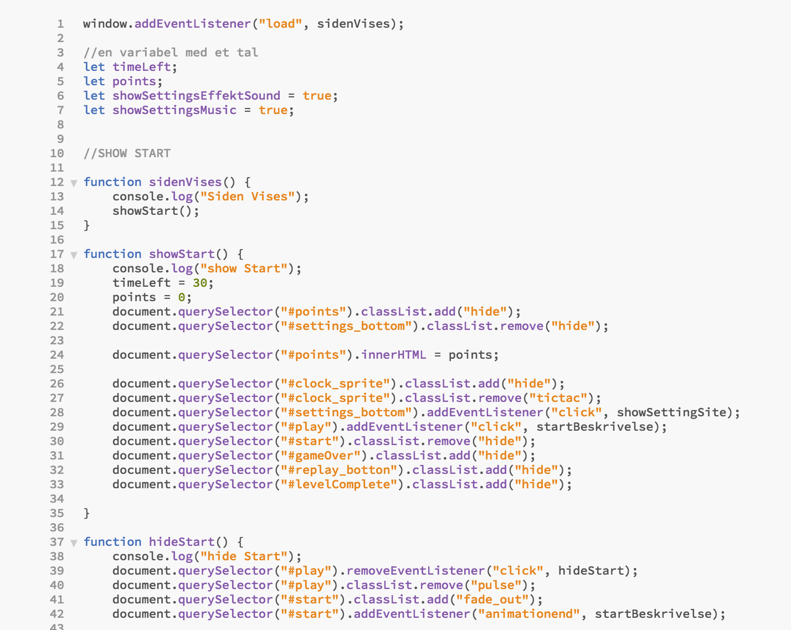
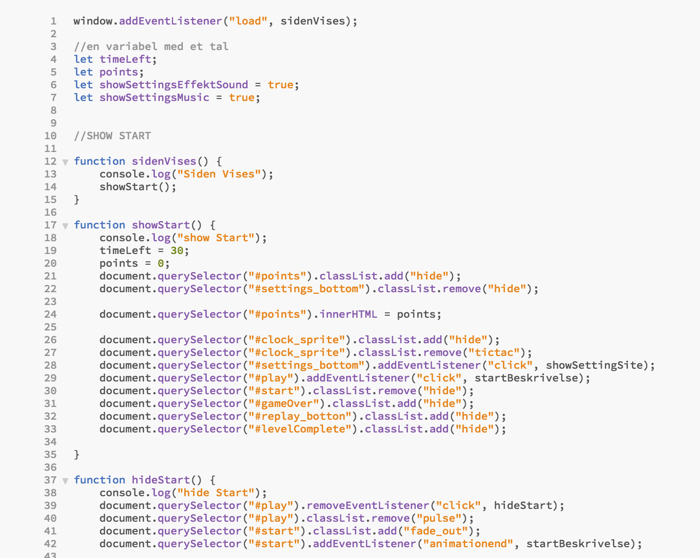

LAURA
VILLUMSEN
TEMA 3: ANIMATION
I denne animationsopgave skulle vi programmere et interaktivt spil. Vi havde et samarbejde med organisationen Sex & Samfund, hvor produktet skulle have fokus på emnet: billeddeling. Vi benyttede igen JavaScript til at gøre vores spil dynamisk. Da spillet skulle opleves i en browser, skulle vi derfor benytte browser teknologier, såsom HTML, CSS og JS til at implementere dem. JavaScript hjalp vores spil til at blive dynamisk og interaktiv, hvor CSS keyframe gav vores spil animationer og liv. Udover det, var lyd og lydoptagelse en stor del af opgaven, da det gjorde vores spil sjovere for brugeren, her blev vi introduceret til Audition og forskellige lydfilformater. I dette forløb lærte vi igen at sammensætte tværfaglige arbejdsprocesser i design, udvikling af digital indhold og brugergrænseflader. Samt at tilegne os grundlæggende viden, færdigheder og kompetencer indenfor design og udvikling af digitale brugergrænseflader og indhold.
Forløbet gik ud på at belære unge, om at billededeling er ulovligt og at man skal huske at respektere andre menneksers grænser. I dette forløb lærte vi både at kode et spil, men også at udvikle en idé, som tilpasser en virksomheds koncept. Vi lærte også i høj grad, at fokusere på målgruppen og konstant opveje om det arbejde vi havde lavet, passer til målgruppen.
 
